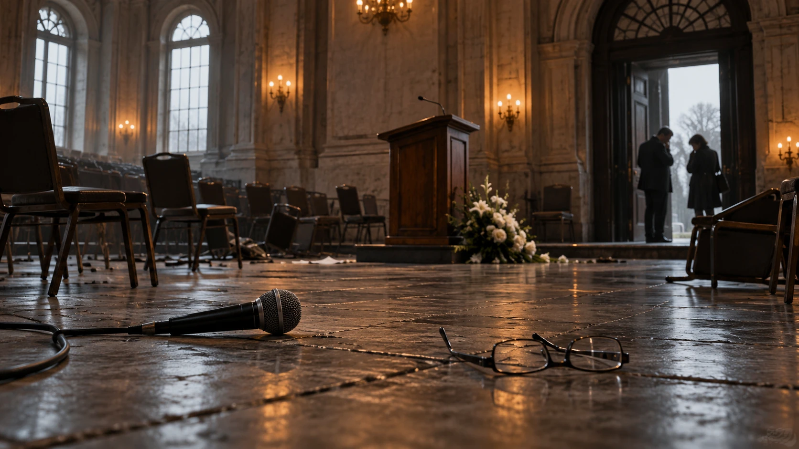
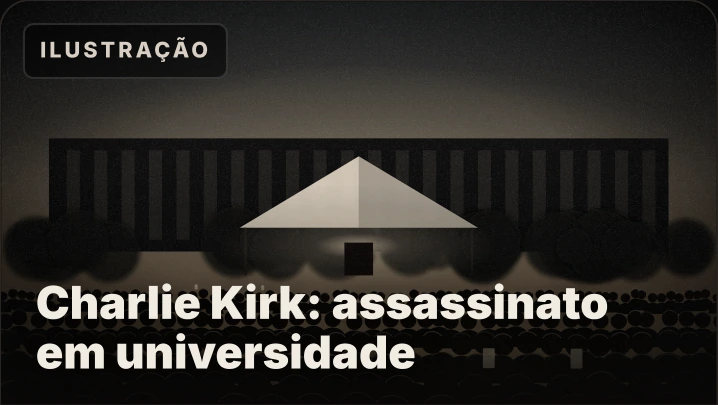

01Assassinatos e execuções
Quando a violência tira uma vida.
Execuções, homicídios e mortes sob investigação atingem pessoas e a participação política. A responsabilidade precisa ser examinada em cada episódio.
Casos, responsabilidade e fontes
Oswaldo Payá, Cuba: a CIDH responsabilizou o Estado pela violação do direito à vida. O relatório não equivale a condenação criminal de agentes individualizados.
F0032Friedrich Akel, Estônia: execução em Tallinn, em 1941, no contexto do aparelho repressivo soviético descrito pela fonte histórica.
F0110Elvino Dias, Moçambique: a HRW documentou sua morte em Maputo em 2024. Os autores não estão individualizados na ficha.
F0126
O que as fontes atribuem
Responsabilidade estatal reconhecida pela CIDH, atribuição histórica e autoria ainda não esclarecida são situações diferentes, identificadas nas respectivas fichas.
Documentos que sustentam este bloco
F0032 · F0110 · F0126. As referências completas também estão nas fichas acima.
Ver ilustrações do PDF de referência (1)
Imagens ilustrativas preservadas da edição original, associadas aos episódios correspondentes.
